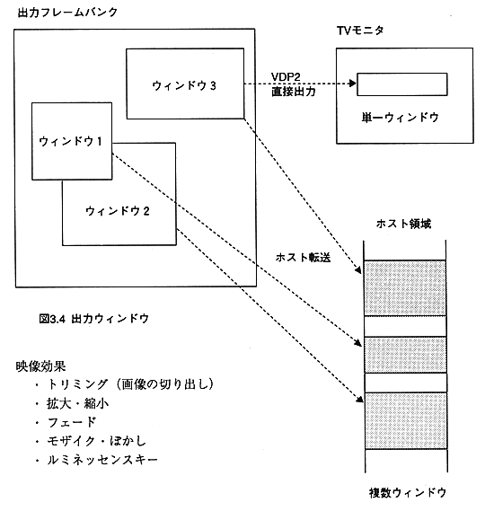
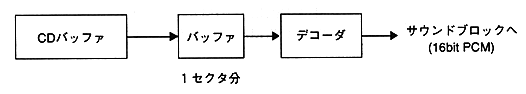

(A) VDP2 direct output method
(B) Host transfer method
∙ Multiple output windows can be created when transferring to the host area, and only one output window can be created when outputting directly to VDP2.
Also, various video effects can be given to these windows.

Image effects
